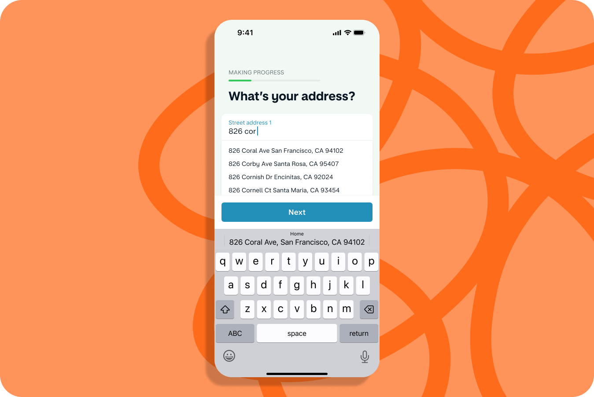
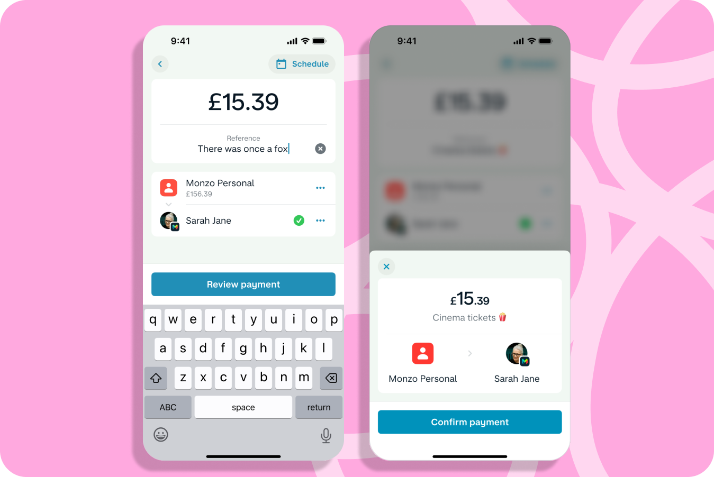
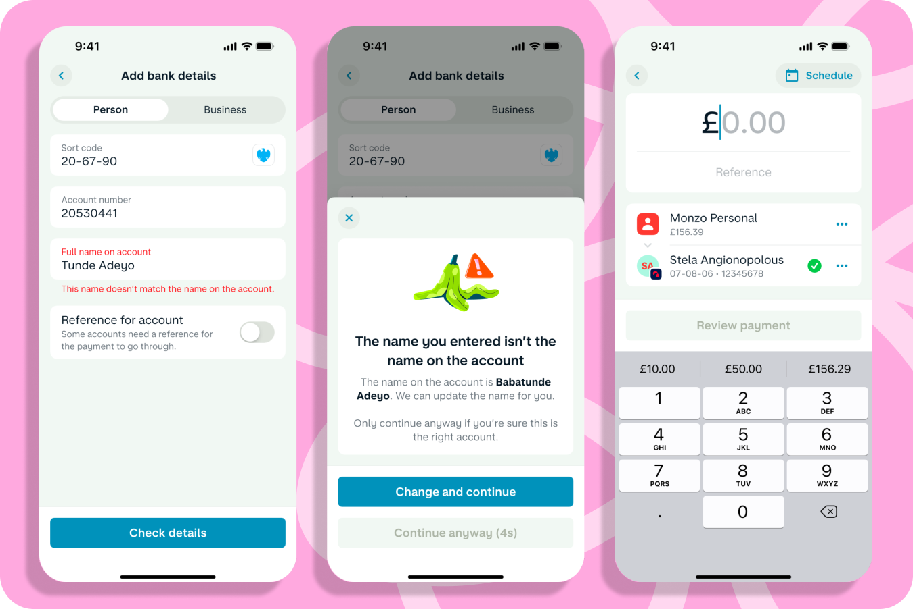
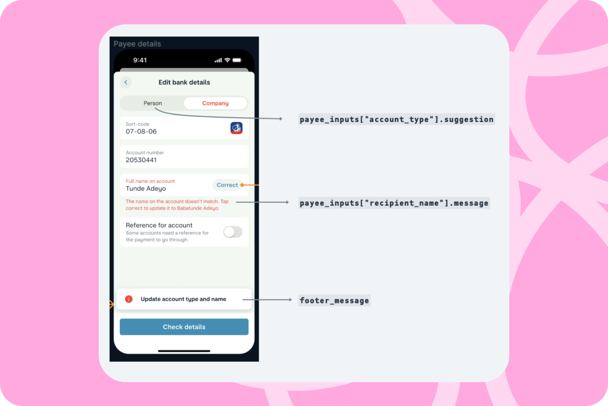
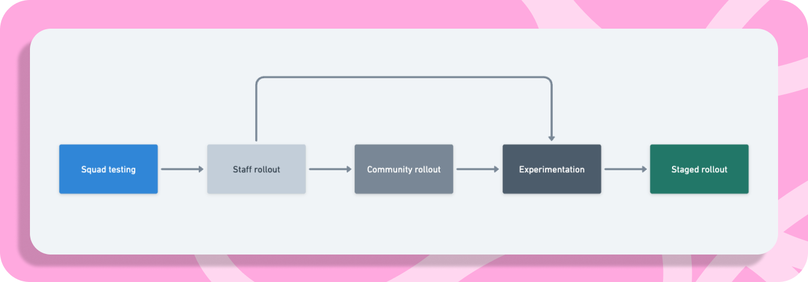
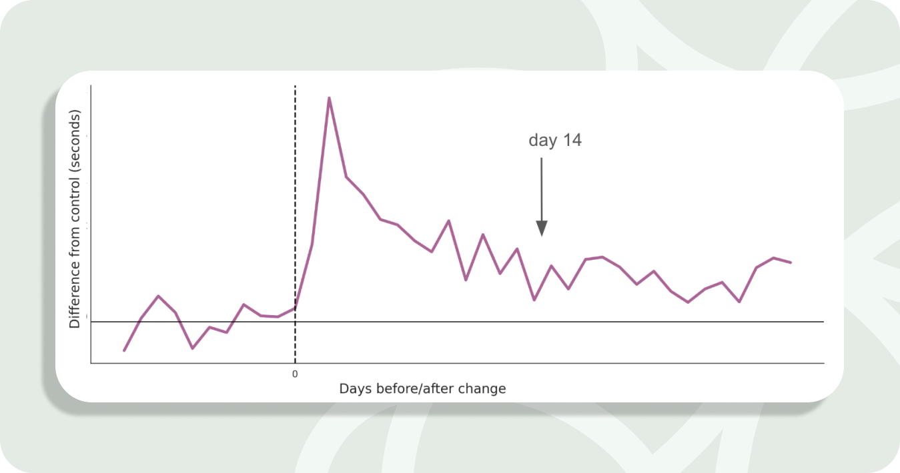
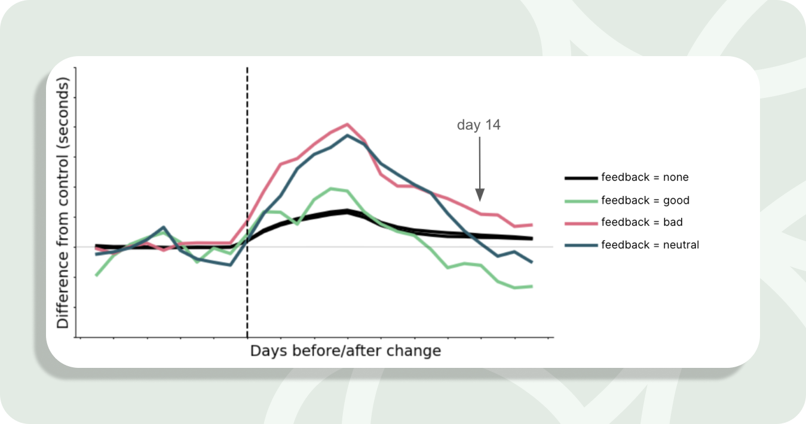

Case study 4 · Monzo · visual study
Monzo: remove work, then prove it
Three posts by Monzo’s engineers and data scientists, with their own screens. Sign-up went from 39 screens to 17 and completion from 9% to 40%. Payments became one flow that fixes a wrong name for you.
- A
- Controlled test (A/B, holdback)
- B
- Insider number, no method given
- C
- Expert analysis, no data
- D
- Dated, news or unverifiable
Monzo US sign-up · before / after
39 screens and 210 taps became 17 screens and 74 taps B

123- 1A progress bar (“Making progress”) shows how far through you are.
- 2Address suggestions as you type, via Smarty. Address entry was “the slowest and most typo-prone step”.
- 3iOS autofill offers the saved home address in one tap. Name and phone fill the same way.
In October 2023 only 9% of people who downloaded the app finished sign-up. The team counted 39 unique screens and 210 taps on average, much of it typing what the phone already knew.
Three changes: autofill from the device, address suggestions, and the four terms documents (each scrolled to the end) replaced by one call-out on the phone-number screen. That alone “cut a full four screens”.
our note This is the Wise lesson again from the other side: Wise added prompts so you know what to do; Monzo removed the typing so there’s less to do.
Evidence Before/after against an Oct 2023 baseline, no control group (B). Monzo blog, Mohamed Aly, 4 Sep 2024
Monzo US sign-up · risk rules
Low-risk people skip the check that lost 40% B
One identity check caused about 40% drop-off. Monzo added Alloy, a risk provider, and sorted new users into low, medium and high risk. Low-risk users skip that check. It went to 25% of sign-ups first, then to everyone once it looked stable.
our note The post contradicts itself: the October baseline is 9% in the intro and 8% at the end, and the overall time is 9 minutes in the intro, 7 in the conclusion and 4 in the title (that’s “best customers” only). We show the conclusion’s numbers.
our note The biggest jump here came from policy, not pixels. Deciding who needs friction removed more drop-off than any screen change.
Evidence Staged rollout (25% → all), compared to baseline, no control or sample size (B). Monzo blog, 4 Sep 2024
Delightful Payments · Monzo’s own screens
One payment flow, always in the same order C

1234567- 1Schedule sits in the top bar, so “pay later” isn’t a separate flow.
- 2Amount first, large.
- 3Reference right under it.
- 4From: the source account, changeable inside the flow (an old complaint).
- 5To: the payee, with a green tick once the name is confirmed (step 4).
- 6Review payment: nothing goes yet.
- 7A bottom sheet repeats amount, note, from → to, then Confirm payment.
Bank transfers and Monzo-to-Monzo payments used to be two different flows. Monzo merged them and fixed the order of elements for every payment: top bar with schedule, amount, reference, from, to, review.
our note Same idea as Apple Pay’s payment sheet: one fixed layout people learn once and can trust. It’s also the rule we gave our own Semi GenUI idea: the confirm step never changes.
Evidence Monzo engineering post. Describes the design and build, gives no outcome numbers (C). Monzo blog, Nurlan Isazade, 3 Jul 2024
Delightful Payments · Confirmation of Payee
Wrong name? Monzo offers to fix it C

12345- 1The bank says the name doesn’t match, shown in place, under the field.
- 2A sheet explains it and names the real account holder: “Babatunde Adeyo. We can update the name for you.”
- 3“Change and continue” is the main button: the safe path is the easy path.
- 4“Continue anyway (4s)” is greyed out for a few seconds before it works.
- 5Fixed: the payee shows a green tick, back on the payment screen.

UK banks check the name against the account before you pay (Confirmation of Payee). Most apps show a warning. Monzo goes further: when the name or account type is only slightly off and the fix gives a full match, it offers the fix.
our note Pin 4 is a small, sharp idea: the risky button exists, but it waits a few seconds. That pause is friction on purpose, for the one moment where a wrong payment can’t be undone. The post doesn’t say how long the wait is or whether it was tested; “4s” is read from the screen.
Evidence Monzo engineering post, screens are Monzo’s own, no outcome data (C). Monzo blog, 3 Jul 2024
Delightful Payments · how it shipped
Ship to staff, then community, then a test, then everyone C

About 8 months of build and testing. Low-fidelity prototypes first with the PM and lead designer (a plan “80% complete” in a month). Then staff, then a community post, then an experiment with variants, then a staged rollout by percentage. The server decides who is eligible, so the rollout can change without an app update. It went out “without any major incidents”.
our note For a money flow, the order of release is part of the design: the people who meet the new flow first are the ones most able to forgive it.
Evidence Process description, no numbers (C). Monzo blog, 3 Jul 2024
New home screen · A/B test
People hate change for about two weeks B


The new home was one of Monzo’s biggest design changes. To avoid judging it on the first shock, they used session time as the “change aversion” signal (people take longer when habits break), ran new vs old as an A/B test, added a 30-day diary study including vulnerable customers, and judged the result after day 14.
our note This is the most useful method in the set: don’t trust week one of a redesign. If we ever test Idea 001 or 002, the result should be read after two weeks, not on launch day.
Evidence A/B test (test vs control), no sample size or exact seconds given (B). Monzo blog, Katherine Bryant, 26 Apr 2024
Honest gap
What we couldn’t find
No numbers on the payment flow. Delightful Payments says nothing about speed, errors or wrong payments before and after. The fraud “moment of thought” (Marketing Week’s write-up of Monzo’s pause before risky payments) was blocked to us (403), so it isn’t used. The home screen itself is not shown in the post, only the charts.
Where the screens come from
- Sign-up screens and numbers: How we cut time to sign up for Monzo US from 17 minutes to 4 minutes (Mohamed Aly, 4 Sep 2024).
- Payment screens, Confirmation of Payee and rollout: Delightful Payments (Nurlan Isazade, 3 Jul 2024).
- Home-screen charts: How we measured change aversion with our new home screen (Katherine Bryant, 26 Apr 2024).
- All images are Monzo’s own, from those posts. Pins and notes are ours.